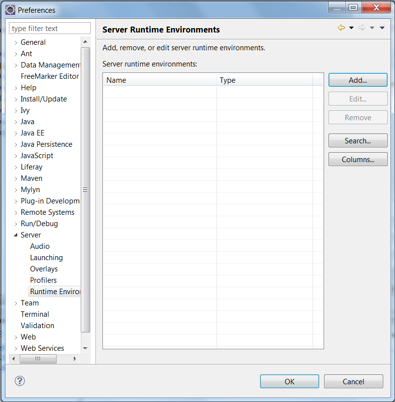
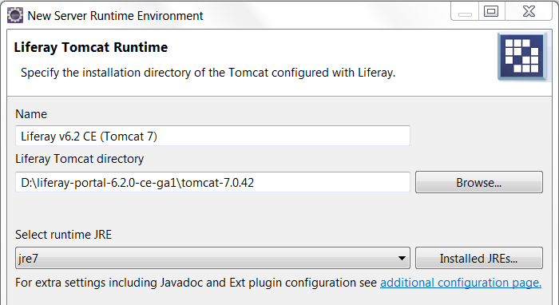
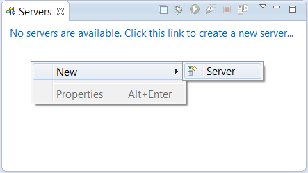
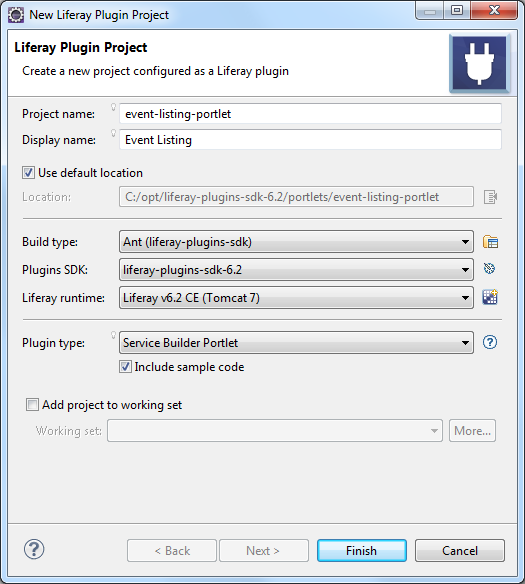

Liferay IDE
Liferay’s developers use a variety of tools to develop the product and as a consequence of that they have always tried hard to allow other developers to use any tools they wanted for their own development. Because of this you can develop portals based on Liferay with complex IDEs Eclipse, Netbeans or IntelliJ Idea or just use text editors such as Notepad. You can write your persistence layer directly using SQL and JDBC or you can use advanced object-relational mapping libraries such as hibernate or iBatis.
But while being agnostic is great, specially for more experienced developers who can reuse their existing knowledge, it can be overwhelming for newcomers. For that reason Liferay has also develped specific development tools that can be used to ease the learning curve when developing portlets with Liferay. The most significant of these tools is Liferay IDE, a fully featured Integrated Development Environment based on Eclipse.
Liferay IDE is an extension for the Eclipse platform that supports development of plugin projects for the Liferay Portal platform. It is available as a set of Eclipse plugins installable from an update-site. The latest version supports developing 5 Liferay plugin types: portlets, hooks, layout templates, themes, and ext plugins. Liferay IDE requires the Eclipse Java EE developer package using either Galileo or Helios versions.
The first two sections below show how to install and set-up Liferay IDE within your environment. If you are using a copy of Liferay Developer Studio, which comes with Liferay Portal Enterprise Edition, you can skip directly to the section titled Testing/Launching Liferay Tomcat Server since it comes already preconfigured.
Installation
This section is a detailed guide to install Liferay IDE.
Requirements
Installation steps
-
Install Eclipse Indigo or Helios (unzip download file from above).
-
Run eclipse executable (eclipse.exe).
-
When eclipse opens, go to Help → Install New Software….

-
In the Work with field, paste in one of the following update sites:
Eclipse Indigo Update Site
[http://releases.liferay.com/tools/ide/eclipse/indigo/stable/](http://releases.liferay.com/tools/ide/eclipse/indigo/stable/)
[http://releases.liferay.com/tools/ide/eclipse/indigo/nightly/](http://releases.liferay.com/tools/ide/eclipse/indigo/nightly/)
(Nightly builds are unstable but contain new features more quickly)
Eclipse Helios Update Site
[http://releases.liferay.com/tools/ide/eclipse/helios/stable/](http://releases.liferay.com/tools/ide/eclipse/helios/stable/)
[http://releases.liferay.com/tools/ide/eclipse/helios/nightly/](http://releases.liferay.com/tools/ide/eclipse/helios/nightly/)
(Nightly builds are unstable but contain new features more quickly)
-
After pasting in URL press enter.

-
The Liferay IDE features should be detected, select it before clicking Next.
-
After calculating dependencies, click Next to complete installation.
-
After installation restart Eclipse to verify installation is complete.
-
After restarting Eclipse go to Help → About and you should see and icon badge for Liferay IDE that shows you have it properly installed.

Alternative installation
The next set of instructions describe how to install Liferay IDE without typing the URL of an update site:
-
Instead of typing in a URL, you can download the the archived update site from this link. liferay-ide-eclipse-updatesite-1.4.0.zip
-
In Add Site dialog, click the Archive button and browse to the location of the downloaded zip file.
-
Installation proceeds the same as previous section.
Set up
This section describes the setup necessary to begin doing Liferay development and testing your developments.
Requirements
Before getting started you should satisfy the next requirements:
-
Liferay Portal 6.0 (6.0.5 or greater) downloaded and unzipped.
-
Liferay plug-ins SDK (6.0.5 or greater) downloaded and unzipped.
-
Eclipse Helios Java EE Developers + Liferay IDE (see the Installation steps).
Note: Earlier versions of Liferay, eg 5.2.x, are not supported yet by the Liferay IDE.
Liferay Plugins SDK Setup
Before you can begin creating new Liferay plugin projects, a Liferay Plugins SDK and Liferay Portal must be installed and configured in the IDE.
-
Open Eclipse with Liferay IDE installed.
-
Open Preference page for Liferay → Installed SDKs (Go to Window → Preferences → Liferay → Installed SDKs).

-
Add your SDK using the add button which brings up the Add SDK Dialog.
-
Browse to the location of your Plug-ins SDK installation. The default name is the name of the directory but you can change it if you wish.
-
Select OK and you should see your SDK in the list of Installed SDKs.

Note: multiple SDKs can be added to the preferences but you will need to select at least one SDK to be the default which is represented by the SDK that has the checkbox selected.
Liferay Portal Tomcat Runtime / Server Setup
-
In Eclipse open the Runtime environments preference page (Go to Window → Preferences → Server → Runtime environments).

-
Click Add to add a new Liferay runtime and find Liferay v6.1 (Tomcat 7) under the Liferay, Inc. category and click Next.

-
Click Browse and select the location of the liferay-portal-6.1.x directory.

-
Once you have selected the Liferay portal directory, if a bundle JRE is present, this bundle will be automatically selected as the JRE to use for launching the server. However, if there is no JRE bundle (Mac and Linux users) then you will need to select the JRE to use for launch.

-
Click finish and you should see the Liferay portal runtime in the list of runtimes in the preference page.

-
Click ok to save the runtime preferences.
-
If you didn’t choose to create a server you will need to create one from the servers view before you can test the server.

-
Find the Liferay, Inc category and select the Liferay v6 Server and choose the Liferay v6 Runtime that you had previously created.

Testing/Launching Liferay Tomcat Server
Once your Liferay Portal Server setup is complete you can launch the server from the servers tab of Eclipse. Simply select the server and then click on the green Start the Server button. Once the server is running a red Terminate button will appear which you can use to stop the server.


Alternatively, you can start/stop the server by selecting Run or Terminate from the Run menu of Eclipse.
Once the server is finish launching you can open the portal home from the context menu of the Liferay Tomcat server in the Servers view:

Creating New Liferay Projects
Now that an SDK and portal server have been configured you can create a new Liferay plug-in project. Go to File → New Project… → Liferay → Liferay Plug-in Project.
In the Liferay project wizard page, the newly configured SDK and Liferay Runtime should be pre-selected. Also the plugin type portlet is the default. Simply type in a project name and cooresponding display name and click Finish.

If it worked you should see a new plugin project in the package explorer.

Deploying New Liferay Projects to Liferay Server
Now with the newly created project, right-click the Liferay Server in the Servers view and select Add and Remove….

Select the new project and click Add to move it to be deployed to the server.

and then click Finish.
You should see the project get deployed to Liferay Tomcat server and in the console see a message about 1 new portlet being available:

Open Liferay Portal Home http://localhost:8080/ in most cases and login within the following credentials:
user: **test@liferay.com**
password: test
Click Add → More, expand the Sample Category and click the Add link next to the Demo application. You should see the correctly deployed portlet on the page.

Importing Existing Projects into Liferay IDE
If you have been following the examples of this guide using the Plugins SDK or have previous plugins developed with it that you want to keep developing with Liferay IDE then this section is for you. It also shows other options to import. Specifically it shows how to import from:
-
Existing Liferay projects that are not in Eclipse workspace.
-
Projects already in Eclipse but not Liferay IDE (don’t have Liferay facet or target runtime).
-
Existing Liferay IDE projects from another version of Liferay IDE or workspace.
The following subsections describe the steps for each of them with more detail.
Importing existing Liferay Project from a Plugins SDK
An existing Liferay project that has been created by the Plugins SDK but has not yet been added to an Eclipse workspace or have not been added to the current workspace open in Eclipse/Liferay IDE. These projects may or may not have .project or .classpath files. Whether they do or don’t we will follow the same steps and use the same wizard.
There are two options to create projects from existing sources, depending on whether you want to create one single project or multiple projects from the same SDK. Let’s see both in detail.
Note: The two next sections assume that you have Liferay plug-ins SDK directory structure and you have previously created projects inside of that directory structure.
Create one single project from one plugin in an existing sources
This option will create one project for a single plugin that already exists inside a Plugins SDK.
-
In Eclipse, go to File → New → Project… → Liferay → Liferay Project from Existing Source.

Or you can invoke the same wizard from the Liferay shortcut bar.

-
Browse to the location of the project folder. Note: the project folder should be a sub-directory of one of the plugin types, e.g. portlets, hooks, themes, etc. If not it will not be able to be imported correctly.Once you select the plugin project folder you should see the plugin type and SDK version values get updated to correct values. If the SDK is not recent enough or project type is not correct it will be marked with an error.

-
Once you select the plugin project folder you should see the plugin type and SDK version values get updated to correct values. If the SDK is not recent enough or project type is not correct it will be marked with an error.

-
Next you will need to select a Liferay Runtime to configure on the project once it is imported. If you don’t have a Liferay Runtime, use the New… button to create a new Liferay portal runtime (Tomcat bundle only supported).

-
Click Finish to perform the import.
-
Read the section below on verifying the success of an import process to make sure that your project was configured correctly as a Liferay IDE project.
Create multiple projects for all plugins in a Plugins SDK
This option will transverse an existing Plugins SDK and will allow creating one project for each of the plugins it finds inside in one single step.
-
In Eclipse go to File → Import… → Liferay → Liferay Plugin SDK projects.

-
First you must select the Plugins SDK that you want to import projects from in the combo box at the top of the wizard.

-
If you don’t have any SDKs configured in Liferay IDE use the configure link to add a setting that points to the Plugins SDK that you want to import projects from.
-
To configure a Plugins SDK on the Installed SDKs on the pref page just click Add and then Browse to the directory of the Plugins SDK root directory.
-
Once you have a configured Plugins SDK, you can select it in the Combo box and then the SDK location and version will be filled in. If either are not valid it will be marked with an error.

-
After the SDK is selected the list of projects that are available for import will be shown in the table. If the projects are already in the workspace they will be disabled. If the project is available for import it will have a empty checkbox that can be selected.

-
Select which projects that you wish to import.
-
Select the Liferay runtime that you want to setup for the imported projects.
-
If you don’t have a liferay runtime you can add one with the New… button.
-
Click Finish.
-
Read the section below on verifying the success of an import process to make sure that your project was configured correctly as a Liferay IDE project.
Importing an existing Eclipse Project that is not aware of the Liferay IDE
If your project is not in your Eclipse workspace, you can use the first set of steps above. If your project is already in your workspace (see it in project explorer) but is not yet a Liferay IDE project, the following steps can be used to convert the project.
-
In Eclipse, right click the eclipse project that you want to convert, select Liferay → Convert to Liferay plug-in project.
Note: If you don’t have a convert action available it means the project is either already a Liferay IDE project or it is not a faceted project with Java and Dynamic Web project facets configured and will need to be configured accordingly.

-
When the convert dialog wizard opens your project should be auto-selected and the SDK location and SDK version should be auto-detected. If they are not valid an error message will be displayed.

-
Select the Liferay runtime that you wish to set on the project. If you don’t have a Liferay Runtime define use the New… action to create one.
-
Click Finish.
-
Read the section below on verifying the success of an import process to make sure that your project was configured correctly as a Liferay IDE project.
Importing an existing Liferay IDE project
This section describes the steps that can be followed if you have previously created or converted a Liferay IDE project in your workspace but it is no longer in the current workspace there are a couple of options for importing this project.
-
Open Liferay IDE, go to File → Import … → General → Existing Projects into Workspace.
-
Use option Select root directory, then click Browse.
-
Select the directory of the previous Liferay IDE project.
-
Then in the list of projects you should see the one project you selected.
-
Click Finish.
-
Read the section below on verifying the success of an import process to make sure that your project was configured correctly as a Liferay IDE project.
If you have any errors, it may be that either the SDK name used in that project or the runtime id used doesn’t exist in your new workspace. You can modify the SDK name in the Project Properties → Liferay page and you can modify the targeted runtime in the Project properties → Targeted Runtimes page.
Verifying that the import has succeeded
Follow the following steps to verify that either of the previous import processes has been successful.
-
Once the project import process is finished, you should see a new project inside Eclipse and it should have an “L” overlay image to show its a Liferay project.

-
Secondly, to make sure the project is now a Liferay IDE project is to check the target runtime project property (right-click project → properties → target runtimes) and also check the project facets to make sure both Liferay runtime and Liferay plug-in facets are properly configured.


Developing on a Remote Server (new TODO)